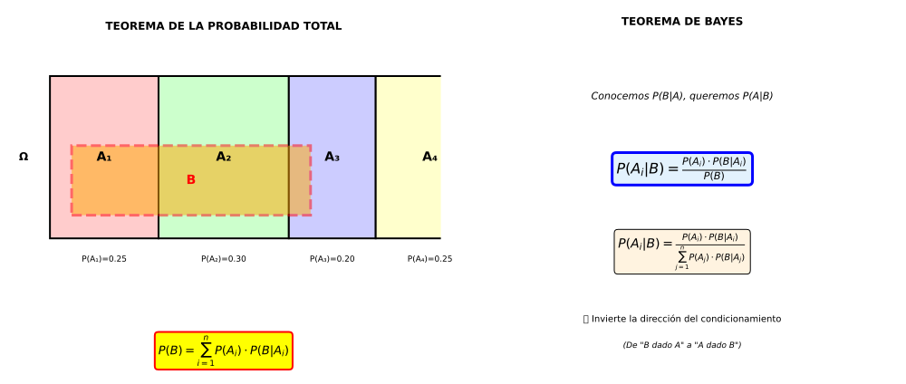

Bayes permite "dar la vuelta" al condicionamiento:
| Tenemos | Queremos | Ejemplo |
|---|---|---|
| P(Test+|Enfermo) | P(Enfermo|Test+) | Diagnóstico médico |
| P(Palabra|Spam) | P(Spam|Palabra) | Filtro correo |
| P(Dato|Hipótesis) | P(Hipótesis|Dato) | Inferencia científica |
Ej 1: Tres máquinas (A, B, C) producen tornillos. Producción diaria:
Si seleccionamos un tornillo aleatorio y resulta defectuoso, ¿cuál es la probabilidad de que venga de la máquina A?
Datos (probabilidades a priori):
Probabilidades condicionadas (verosimilitudes):
Queremos: P(A|D) usando Bayes
Paso 1: Probabilidad total de defectuoso
Paso 2: Teorema de Bayes para máquina A
Resultado: 34.5% de probabilidad de que el tornillo defectuoso venga de A.
Interpretación:
Verificación: Calculemos también P(B|D) y P(C|D):
Ej 2 (Contexto Vigo - Análisis Meteorológico):
En Vigo, los días se clasifican en:
Probabilidad de lluvia según el cielo:
Si HOY llovió en Vigo, ¿cuál es la probabilidad de que el día estuviera nublado?
Datos:
Queremos: P(N|L)
Paso 1: P(Lluvia) - Probabilidad total
Paso 2: Bayes
Conclusión: Si llovió, hay 88.2% de probabilidad de que estuviera nublado.
Tiene sentido:
Ej 3 (Diagnóstico con dos enfermedades):
Un síntoma puede deberse a 3 causas:
| Causa | Prevalencia | P(Síntoma|Causa) |
|---|---|---|
| Enfermedad A | 1% | 90% |
| Enfermedad B | 4% | 60% |
| Sano | 95% | 5% |
Si un paciente presenta el síntoma, ¿qué probabilidad hay de cada causa?
Datos:
Paso 1: Probabilidad total del síntoma
Paso 2: Bayes para cada causa
P(A|+) - Enfermedad A:
P(B|+) - Enfermedad B:
P(S|+) - Sano (falsa alarma):
Verificación: 11.2% + 29.8% + 59.0% = 100% ✓
Conclusión clínica:
| Diagnóstico | A priori | A posteriori | Variación |
|---|---|---|---|
| Enfermedad A | 1% | 11.2% | ×11.2 |
| Enfermedad B | 4% | 29.8% | ×7.5 |
| Sano | 95% | 59.0% | ×0.62 |
Ej 4 (Aplicación informática): Filtro antispam. El 30% de correos son spam. Una palabra aparece en:
Si un correo contiene esa palabra, ¿probabilidad de que sea spam?
Datos:
Probabilidad total de la palabra:
Bayes:
Decisión del filtro: Si probabilidad > 50%, marcar como spam → Este correo SÍ se marcaría.
Nota: Filtros reales usan múltiples palabras simultáneamente para mayor precisión (Naïve Bayes Classifier).
La gente tiende a ignorar P(A) (prevalencia) y sobreestimar P(A|B) basándose solo en P(B|A). Bayes corrige esta intuición errónea.